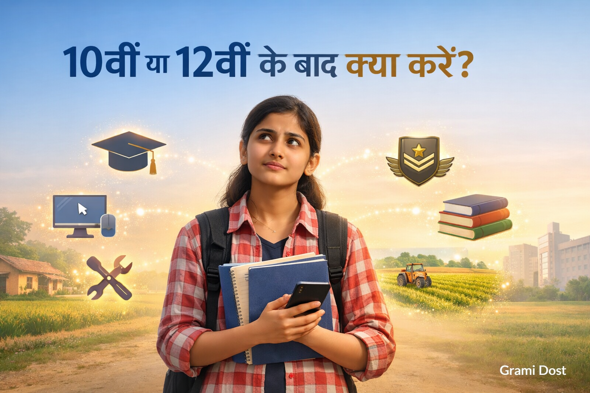

10वीं–12वीं के बाद क्या करें? गाँव के छात्रों के लिए Best Career Options (2025 Guide)
10वीं या 12वीं पास करने के बाद गाँव के ज़्यादातर छात्रों के मन में एक ही सवाल होता है – अब आगे क्या करें? सही जानकारी और मार्गदर्शन न मिलने की वजह से कई होनहार छात्र गलत फैसला ले लेते हैं या पढ़ाई बीच में छोड़ देते हैं। गाँवों में कोचिंग, काउंसलिंग और career guidance की कमी आज भी एक बड़ी समस्या है।
इस लेख में हम 2025 के हिसाब से 10वीं–12वीं के बाद best career options को आसान भाषा में समझेंगे, ताकि गाँव का हर छात्र और उसके माता-पिता सही फैसला ले सकें।
Career चुनने से पहले क्या देखना चाहिए?
Career चुनना ज़िंदगी का सबसे बड़ा फैसला होता है। सिर्फ दोस्त क्या कर रहे हैं या समाज क्या कहता है, इस आधार पर decision लेना सही नहीं होता।
- आपकी रुचि (Interest) किसमें है?
- आपकी पढ़ाई की क्षमता और background क्या है?
- घर की आर्थिक स्थिति क्या allow करती है?
- आने वाले 5–10 साल में उस field का scope क्या है?
10वीं के बाद Best Career Options
Science Stream
जिन छात्रों को Maths, Science में interest है, वे 11वीं–12वीं में Science stream चुन सकते हैं। आगे चलकर Engineering, Medical, Polytechnic जैसे options खुलते हैं।
Commerce Stream
Business, accounts और money management में interest रखने वाले छात्रों के लिए Commerce एक अच्छा विकल्प है।
Arts Stream
Arts सिर्फ “कमज़ोर छात्रों” के लिए नहीं है। इसमें History, Geography, Political Science जैसे subjects होते हैं जिनसे आगे teaching, civil services और social work जैसे career बन सकते हैं।
ITI / Skill Courses
जो छात्र जल्दी job करना चाहते हैं, उनके लिए ITI, electrician, fitter, welder जैसे skill-based courses बहुत अच्छे विकल्प हैं।
12वीं के बाद Best Career Options (2025)
Science Students
- Engineering (B.Tech / Diploma)
- Medical / Nursing / Paramedical
- B.Sc, Computer Science
Commerce Students
- B.Com, BBA
- Accounting, Banking preparation
- Small business & entrepreneurship
Arts Students
- B.A + Competitive Exams
- Teaching career
- Social sector & administration
Teaching Career: गाँव के छात्रों के लिए सुनहरा मौका
Teaching एक सम्मानजनक और stable career है। गाँव के छात्र B.A, B.Sc, B.Ed करके शिक्षक बन सकते हैं और अपने ही क्षेत्र के बच्चों का भविष्य सुधार सकते हैं।
Government Exams & Competitive Exams
सरकारी नौकरी आज भी गाँव के युवाओं का सपना है। SSC, Railway, Police, Army, Patwari, और अन्य exams के ज़रिये secure future बनाया जा सकता है।
Skill-Based Careers: Future का रास्ता
2025 के बाद skill वालों की demand और बढ़ेगी। Digital marketing, mobile repairing, data entry, graphic design जैसे skills सीखकर घर से भी कमाई संभव है।
Agriculture & Rural-Based Careers
Agriculture सिर्फ खेती तक सीमित नहीं है। Dairy farming, organic farming, agri-business और modern farming techniques से अच्छी income हो सकती है।
Online पढ़ाई और Mobile से Career कैसे बनाएं?
आज मोबाइल गाँव के छात्रों का सबसे बड़ा हथियार है। Free PDFs, online videos, mock tests और guidance से घर बैठे preparation की जा सकती है।
Career Mistakes जो Avoid करनी चाहिए
- बिना जानकारी stream चुन लेना
- दूसरों की देखा-देखी फैसला लेना
- जल्दी पैसे के लालच में skill छोड़ देना
Simple Career Selection Formula
Interest + Ability + Opportunity = Right Career
Grami Dost Mission
Grami Dost का मकसद गाँव के छात्रों तक सही जानकारी पहुँचाना है, ताकि कोई भी छात्र guidance की कमी की वजह से पीछे न रह जाए।
निष्कर्ष: आप कर सकते हैं!
अगर आप गाँव से हैं तो यह आपकी कमजोरी नहीं, बल्कि आपकी ताकत है। सही दिशा, मेहनत और जानकारी से आप भी एक सफल career बना सकते हैं। आज फैसला लें, कल आपका भविष्य बदलेगा।